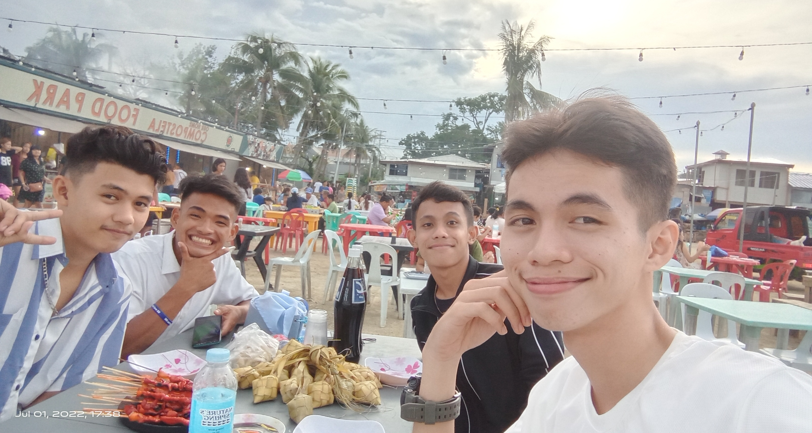
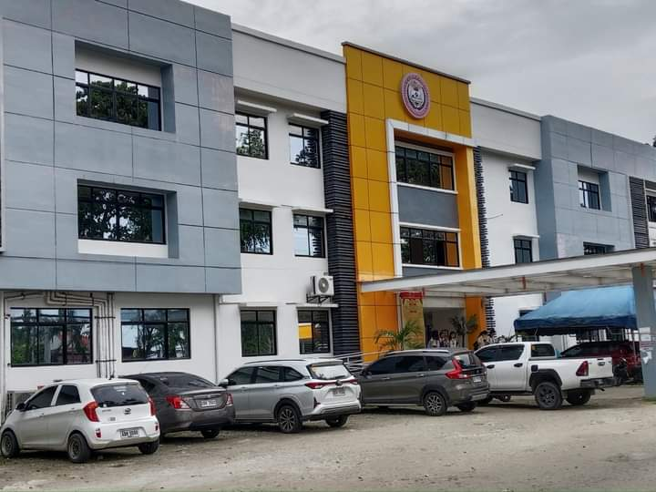
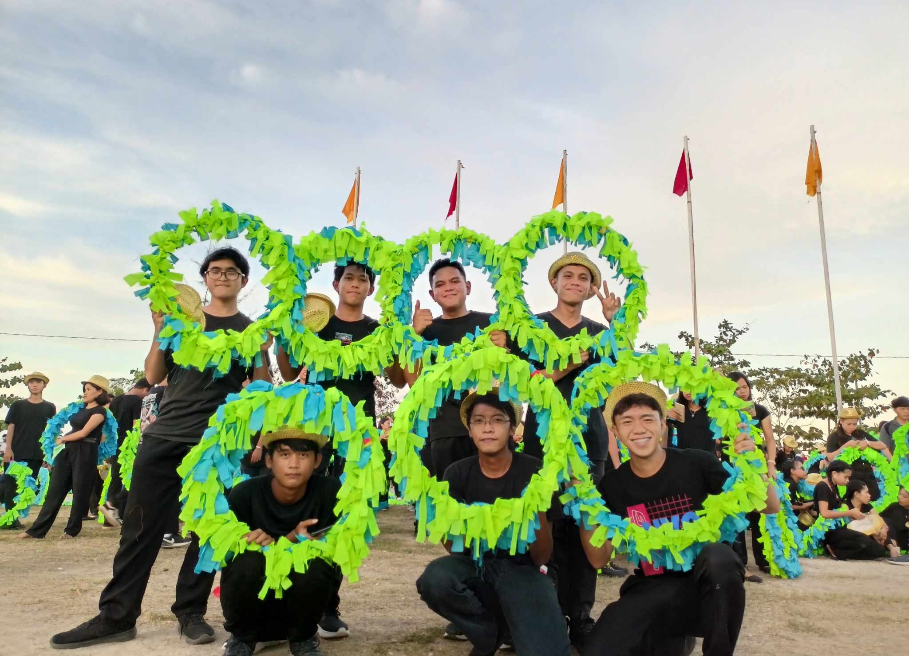

My Bittersweet Life
I was born into a family where my parents were quite strict, as they wanted me to grow into an exceptional son, teaching me many things—even changing my left-handed writing to right-handed, believing it would be better for me. I was raised in isolation, unable to interact with other children for almost six years, and if I ever went outside the house, I would be punished. However, that changed in 4th-5th grade in elementary school, when I was finally allowed to interact with other children—though I still had a strict curfew.

Years later, I enrolled in high school, stepping into a new world filled with challenges and opportunities. It was a time of discovery—I was finally able to experience more freedom, make friends, and explore different aspects of life beyond the strict rules I had grown up with. However, the discipline instilled in me as a child still lingered, shaping how I approached my studies and interactions. Despite the newfound independence, I often felt the weight of expectations, pushing myself to meet the high standards set for me. High school became a turning point—a place where I started to understand myself, my strengths, and the path I wanted to take in life."

High school became a turning point—a place where I started to understand myself, my strengths, and the path I wanted to take in life. I began to break free from the shadows of my upbringing, slowly gaining confidence in my own decisions. While the pressure to be exceptional still weighed heavily on me, I started to realize that my worth wasn’t defined by perfection. I struggled with balancing my desire for success and the need to just be myself. But as time passed, I found new passions, forged deeper connections with friends, and began to embrace the idea that it's okay to not always be the best. The journey wasn’t easy, but it was mine, and I was learning to navigate it on my own terms.
Senior high school brought its own set of challenges, especially during the COVID-19 pandemic, which forced us into online classes. The shift to remote learning made everything feel distant—not just the lessons, but the connections with my peers and teachers as well. Despite the challenges, I pushed through, trying to stay disciplined and focused, while learning to manage the new format of education. It was a tough time, with the pressure to perform while being isolated at home. But I adapted, honing my ability to be independent and self-motivated, while still struggling with the lack of social interaction.

When I entered college, I was both excited and nervous, stepping into a new chapter of my life. My performance was a mix of high and mid-range grades—some subjects came easily, while others were more challenging. College pushed me to step outside of my comfort zone, and though I sometimes struggled, I remained determined to learn and grow. My college years became a time of self-discovery, building skills that would shape my future, while continuing to navigate the balance between ambition and personal growth."

Looking to the future, I am both hopeful and cautious. I know that the challenges I've faced so far have prepared me for what's ahead. I want to continue growing both personally and professionally, applying the lessons I've learned to achieve my goals. While I know the road won't always be smooth, I'm ready to face whatever comes next with the same resilience that has carried me through the hardest moments. The future is uncertain, but I’m committed to making the most of the opportunities it brings."
"My life has been a journey of overcoming challenges, learning from mistakes, and growing stronger with each step."